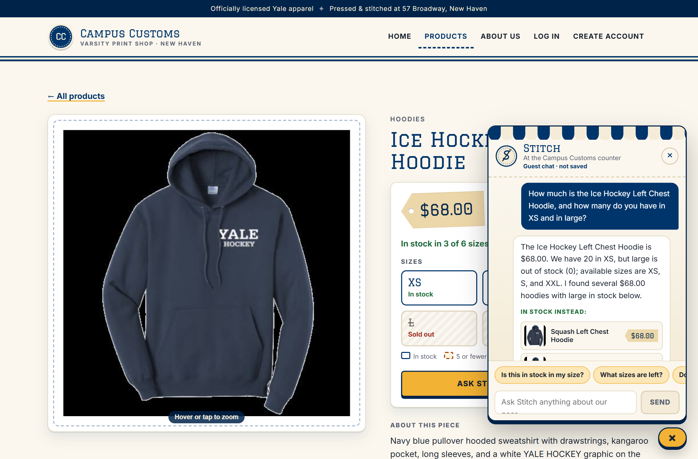
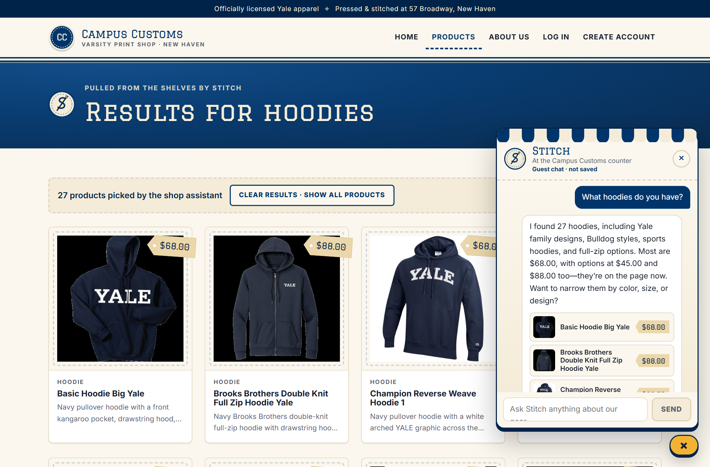
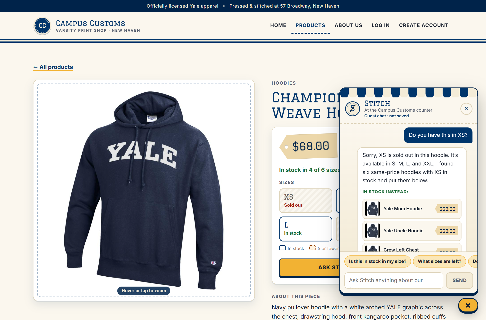

Campus Customs: Live App Check
How the site was run: the backend ran locally with uvicorn main:app --reload --port 8000 (from backend/, PydanticAI agent on gpt-5.6-luna via Portkey). The front end ran with npm run dev (from frontend/, http://localhost:5173). The screenshots are real captures of that running app. Each was taken in a fresh guest session, in Google Chrome driven by tests/capture_app_check.py (Playwright) at 1366×900, typing each question into the chat widget and waiting for the bot's live reply.
1. Inventory check PASS
Asked on the Ice Hockey Left Chest Hoodie page: How much is the Ice Hockey Left Chest Hoodie, and how many do you have in XS and in large?

ice-hockey-left-chest-hoodie is $68.00, with XS = 20 and L = 0 (S = 8, XXL = 25, M and XL = 0), as the page's own size chips also show. The green "Checked against store data · $68.00 · 20 in XS" badge confirms the reply passed the fact check against the tool results.2. Dynamic search results PASS
Asked on the Home page: What hoodies do you have?

3. Usability feature: in-stock alternatives PASS
Asked on the Champion Reverse Weave Hoodie 1 page: Do you have this in XS?

find_alternatives tool and showed same-category, same-price ($68.00) hoodies that have XS in stock, as clickable cards. For example, Yale Mom Hoodie (XS = 25), Yale Uncle Hoodie (XS = 25) and Crew Left Chest Hoodie (XS = 20).